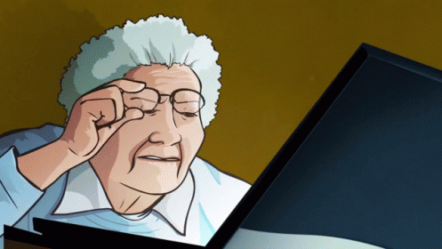

INGREDIENTS
- 1 1/2 cup (3 sticks) softened butter
- 1 cup brown sugar
- 1 cup granulated sugar
- 1 Tbl vanilla instant pudding powder
- 2 Tbl milk
- 2 Tbl vanilla extract
- 2 eggs
- 4 cups all purpose flour
- 2 tsp baking soda
- 1/2 tsp salt
- 4 cups chocolate chips
- 1 cup chopped walnuts or pecans(optional)
NUTRITIONAL FACTS
Probably bad for you!
INSTRUCTIONS
- Preheat oven to 350 degrees.
- Beat butter and sugars together until light and fluffy.
- Stir in pudding mix milk and vanilla extract.
- Beat in eggs.
- Add dry ingredients and stir until combined.
- Stir in chocolate chips and nuts.
- Place 1 1/2 inch balls of dough 2 inches apart on an un greased cookie sheet.
- Bake 8-10 minutes or until golden brown.

Jackie Cline | Homework #1